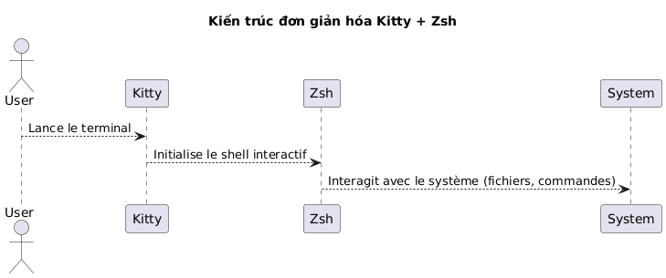
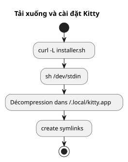
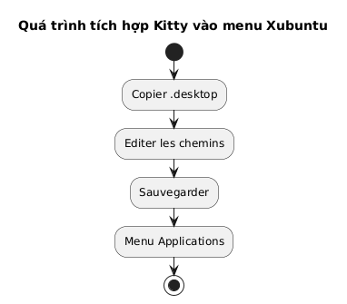
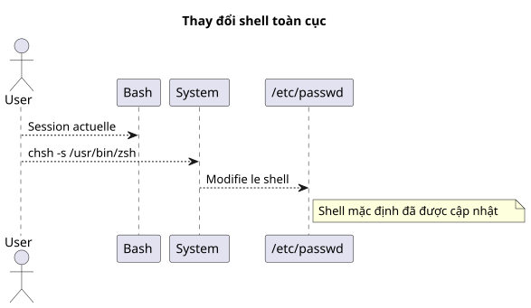
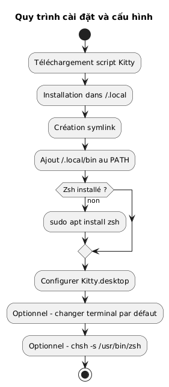
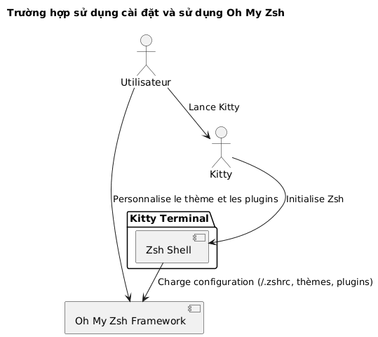
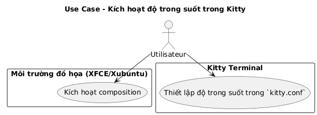
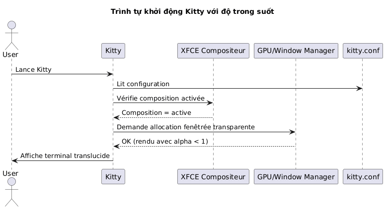

Cài đặt terminal Kitty và cấu hình Zsh làm shell mặc định trên Xubuntu
Đăng ngày 07 May 2026 Cập nhật ngày 2026-05-07
- Tại sao nên chọn Kitty và Zsh?
- Yêu cầu hệ thống
- Tải xuống và cài đặt Kitty
- Tích hợp Kitty vào Xubuntu
- Cài đặt Zsh
- Thiết lập Zsh làm shell mặc định
- Cấu hình Zsh (tùy chọn)
- Tóm tắt quy trình làm việc đầy đủ
- Kiểm tra cuối cùng
- Cài đặt và cấu hình Oh My Zsh
- Kích hoạt độ trong suốt trong Kitty
- Tắt tiếng bíp (audible bell)
- Cập nhật Kitty
- Tham khảo
- Kết luận
Hướng dẫn này giải thích từng bước cách cài đặt terminal kitty trên Xubuntu, cấu hình chính xác và thay thế bash bằng zsh làm shell mặc định. Dự án kitty có sẵn tại đây: https://github.com/kovidgoyal/kitty.
Vui lòng cung cấp nội dung cần dịch. Kitty là một terminal hiện đại, nhanh và có thể cấu hình, đặc biệt phù hợp cho những nhà phát triển khắt khe. Vui lòng cung cấp văn bản cần dịch.
Tại sao nên chọn Kitty và Zsh?
Kitty nổi bật bởi:
-
Hiệu suất vượt trội nhờ tăng tốc GPU,
-
Một cấu hình hoàn toàn dựa trên một tệp văn bản duy nhất,
-
Khả năng hỗ trợ phông chữ và chữ ghép tuyệt vời.
Còn Zsh là một shell tương tác mạnh mẽ cung cấp:
-
Một tính năng tự động hoàn tất thông minh,
-
Một prompt có thể tùy chỉnh,
-
Khả năng tương thích cao với
bash.
Bằng cách kết hợp Kitty và Zsh, bạn sẽ có được một môi trường làm việc hiệu quả và thẩm mỹ.

|
Hướng dẫn này chủ động giới hạn trong việc cài đặt thông qua script và trên Xubuntu. |
Yêu cầu hệ thống
Trước khi bắt đầu, hãy đảm bảo bạn có:
-
Xubuntu đã được cài đặt,
-
một kết nối internet,
-
một shell bash hoạt động để chạy script.
Kiểm tra môi trường của bạn:
uname -a
lsb_release -aTải xuống và cài đặt Kitty
Kitty khuyên bạn nên cài đặt nó thông qua một script chính thức, script này sẽ đặt các tệp tin vào trong`~/.local/kitty.app`Please provide the text you would like me to translate.
|
Phương pháp này độc lập với các trình quản lý gói (không có`apt`). |
Tải xuống script cài đặt
Chạy lệnh sau:
curl -L https://sw.kovidgoyal.net/kitty/installer.sh | sh /dev/stdinLệnh này thực hiện:
-
tải xuống các tệp nhị phân,
-
trích xuất trong`~/.local/kitty.app`,
-
tạo các liên kết tượng trưng.

Tạo các liên kết tượng trưng
Để có thể gọi`kitty`từ terminal, hãy tạo một liên kết biểu tượng:
ln -s ~/.local/kitty.app/bin/kitty ~/.local/bin/kittyThêm`~/.local/bin`vào PATH của bạn nếu bạn chưa thực hiện:
echo 'export PATH="$HOME/.local/bin:$PATH"' >> ~/.zshrc
source ~/.zshrcBạn có thể kiểm tra cài đặt:
kitty --versionTích hợp Kitty vào Xubuntu
Để Kitty xuất hiện trong menu ứng dụng:
Sao chép tệp desktop
Sao chép tệp`.desktop`được cung cấp:
cp ~/.local/kitty.app/share/applications/kitty.desktop ~/.local/share/applications/Chỉnh sửa tệp desktop
Chỉnh sửa tệp:
nano ~/.local/share/applications/kitty.desktopKiểm tra hoặc chỉnh sửa các dòng sau:
[Desktop Entry]
Version=1.0
Type=Application
Name=Kitty Terminal
Comment=Fast GPU-based terminal emulator
Exec=/home/$USER/.local/kitty.app/bin/kitty
Icon=kitty
Categories=System;TerminalEmulator;Thay thế`YOURUSER`bằng tên người dùng của bạn.

Thiết lập Kitty làm terminal mặc định (tùy chọn)
Để Kitty trở thành terminal được khởi chạy mặc định:
sudo update-alternatives --install /usr/bin/x-terminal-emulator x-terminal-emulator ~/.local/kitty.app/bin/kitty 50
sudo update-alternatives --config x-terminal-emulatorChọn`kitty`trong menu được đề xuất.
Cài đặt Zsh
Nếu Zsh chưa được cài đặt, hãy chạy:
sudo apt install zshKiểm tra cài đặt:
zsh --versionThiết lập Zsh làm shell mặc định
Bạn có thể thay đổi shell của mình trên toàn hệ thống hoặc chỉ riêng trong Kitty.
Phương pháp tổng quát (cho tất cả các thiết bị đầu cuối)
Xác định đường dẫn tuyệt đối:
which zshNhìn chung`/usr/bin/zsh`Vui lòng cung cấp nội dung cần dịch.
Thay đổi shell mặc định:
chsh -s /usr/bin/zshĐăng xuất và đăng nhập lại.

Phương pháp dành riêng cho Kitty
Nếu bạn chỉ muốn thay đổi shell trong Kitty, hãy chỉnh sửa tệp cấu hình:
nano ~/.config/kitty/kitty.confThêm dòng này:
shell zshLưu và khởi động lại Kitty.
Cấu hình Zsh (tùy chọn)
Để tùy chỉnh Zsh của bạn:
Tạo một tệp `.zshrc
touch ~/.zshrc
nano ~/.zshrcVí dụ về cấu hình tối thiểu
export ZSH_THEME="robbyrussell"
export PATH="$HOME/.local/bin:$PATH"
alias ll="ls -la"Tóm tắt quy trình làm việc đầy đủ
Sơ đồ dưới đây tóm tắt toàn bộ quy trình:

Kiểm tra cuối cùng
Khởi chạy Kitty:
kittyBạn sẽ thấy rằng`zsh`đang hoạt động:
echo $SHELLKết quả mong đợi:
/usr/bin/zsh
Để thay đổi kích thước phông chữ trongKitty, cần điều chỉnh tham số`font_size`trong tệp cấu hình. Dưới đây là quy trình chi tiết:
📂 Mở tệp cấu hình
Tệp cấu hình chính thường nằm tại:
~/.config/kitty/kitty.confNếu tệp này chưa tồn tại, bạn có thể tạo nó. Ví dụ:
nano ~/.config/kitty/kitty.conf🖋️ Thêm hoặc sửa đổi `font_size
Thêm chỉ thị sau, hoặc sửa đổi nếu nó đã tồn tại:
font_size 14.0Tại đây`14.0`tương ứng với kích thước mong muốn. Bạn có thể nhập bất kỳ giá trị thập phân nào, ví dụ như`12.0`, 15.5, v.v.
💾 Lưu và khởi động lại Kitty
-
Lưu (
Ctrl + O, sau đó`Entrée`) và thoát (Ctrl + X) nếu bạn sử dụng`nano`Vui lòng cung cấp văn bản tiếng Pháp bạn muốn dịch. -
Hãy đóng tất cả các cửa sổ Kitty, sau đó khởi động lại terminal để thay đổi có hiệu lực.
✅ Điều chỉnh động (Thu phóng tạm thời)
Nếu bạn muốn phóng to/thu nhỏ tạm thời mà không thay đổi cấu hình, hãy sử dụng các phím tắt mặc định:
-
Tăng kích thước phông chữ:
Ctrl + Shift + =
-
Giảm kích thước phông chữ:
Ctrl + Shift + -
-
Đặt lại kích thước:
Ctrl + Shift + Backspace
Các cài đặt này không được lưu lại sau khi đóng terminal.
Cài đặt và cấu hình Oh My Zsh
Một khi Zsh đã được cài đặt và cấu hình làm shell mặc định, bạn có thể làm phong phú môi trường của mình với Oh My Zsh, một framework quản lý cấu hình Zsh, cung cấp:
-
một bộ sưu tập các chủ đề cho prompt,
-
nhiều plugin,
-
một cấu trúc cấu hình rõ ràng.
Cài đặt Oh My Zsh
Hãy đảm bảo rằng Zsh đang hoạt động:
zsh --versionNếu cần thiết, hãy chạy:
zshSau đó, hãy tải xuống và chạy tập lệnh cài đặt chính thức:
sh -c "$(curl -fsSL https://raw.githubusercontent.com/ohmyzsh/ohmyzsh/master/tools/install.sh)"Script này:
-
tạo thư mục`~/.oh-my-zsh`,
-
có thể lưu tệp của bạn`~/.zshrc`,
-
tự động kích hoạt prompt mới.
Thay đổi chủ đề
Mở tệp cấu hình của bạn:
nano ~/.zshrcChỉnh sửa biến`ZSH_THEME`để chọn một chủ đề khác (ví dụ`agnoster`) :
ZSH_THEME="agnoster
Lưu sau đó tải lại cấu hình:
source ~/.zshrcXác minh
Hãy chạy Kitty và kiểm tra xem prompt đã thay đổi hay chưa. Bạn có thể xác nhận rằng Oh My Zsh đang hoạt động bằng cách chạy:
echo $ZSHKết quả sẽ tương tự như:
/home/votre_utilisateur/.oh-my-zsh
Sơ đồ use case

Kích hoạt độ trong suốt trong Kitty
Một trong những tính năng được yêu thích nhất của Kitty là khả năng thêm độ trong suốt cho nền của terminal. Điều này cho phép nhìn thấy nhẹ nhàng môi trường bên dưới (cửa sổ, màn hình nền, v.v.), điều này đặc biệt hữu ích khi làm việc đa nhiệm.
Điều kiện tiên quyết cho sự minh bạch
Sự minh bạch trong Kitty dựa trên cáitrình quản lý cửa sổ compositeđược sử dụng bởi môi trường đồ họa. Trên Xubuntu (dựa trên XFCE), hãy đảm bảo rằngtự động soạn thảo đã được kích hoạtVui lòng cung cấp văn bản cần dịch.
Cần kiểm tra:
-
chuột phải vào màn hình chính > Cài đặt >Cài đặt trình quản lý cửa sổ,
-
thẻNhà soạn nhạc: ô chọn "Activer la composition" phải được đánh dấu.

Cấu hình độ trong suốt trong `kitty.conf
Mở tệp cấu hình của bạn`~/.config/kitty/kitty.conf`Hãy cung cấp văn bản bạn muốn dịch.
nano ~/.config/kitty/kitty.confThêm hoặc chỉnh sửa các dòng sau:
background_opacity 0.85Tham số này chấp nhận các giá trị trong khoảng:
-
1.0→ mờ đục (không trong suốt), -
0.0→ hoàn toàn trong suốt (không thể sử dụng), -
các giá trị trung gian như`0.90`,
0.75, v.v.
Một sự thỏa hiệp trực quan tốt thường nằm ở giữa`0.85` et `0.95`Vui lòng cung cấp văn bản tiếng Pháp cần dịch.
Khởi động lại Kitty
Đóng tất cả các phiên bản của Kitty, sau đó khởi động lại một cửa sổ mới để các thay đổi có hiệu lực:
kittyCác bổ sung có thể có
Nếu bạn sử dụng nền terminal tùy chỉnh, bạn cũng có thể thiết lập màu nền có độ trong suốt (bằng RGBA):
background #1e1e2effThành phần cuối cùng (ff) cho biết độ đục (của`00` à ff).
Biểu đồ trình tự - Khởi tạo Kitty với độ trong suốt

Các hạn chế đã biết
|
Độ xuyên thấu không hoạt động nếu: - trình tổng hợp XFCE đã bị tắt, - một trình quản lý cửa sổ không tương thích đang được sử dụng, - bạn đang sử dụng Kitty trong chế độ tmux chạy ngầm mà không có hỗ trợ độ trong suốt. |
Tắt tiếng bíp (audible bell)
Theo mặc định, Kitty sẽ phát ra tiếng bíp khi một lệnh sai được nhập vào hoặc khi có một sự kiện terminal kích hoạt nó. Âm thanh này có thể nhanh chóng trở nên gây khó chịu, đặc biệt là trong môi trường phát triển cường độ cao.
Để tắt hành vi này, hãy thêm chỉ thị sau vào tệp`~/.config/kitty/kitty.conf`Vui lòng cung cấp nội dung cần dịch.
audible_bell no|
Bạn cũng có thể kích hoạt phản hồi trực quan để thay thế cho tiếng bíp bằng cách: |
Cập nhật Kitty
Vì Kitty được cài đặt thông qua một script chứ không phải trình quản lý gói, việc cập nhật được thực hiện bằng cách chạy lại script cài đặt chính thức. Điều này cho phép tải xuống phiên bản mới nhất và cập nhật bản cài đặt hiện tại của bạn trong`~/.local/kitty.app`Hãy cung cấp văn bản bạn muốn dịch.
|
Hậu tố`.app`trong đường dẫn`~/.local/kitty.app`là quy ước cài đặt Kitty trên Linux thông qua script chính thức, và hoàn toàn không cho thấy sự tương thích độc quyền với macOS. |
|
Trước khi chạy lệnh cập nhật, hãy đảm bảo rằng bạn đang ở trong thư mục cá nhân của mình ( |
Chạy lệnh sau từ thư mục cá nhân của bạn:
curl -L https://sw.kovidgoyal.net/kitty/installer.sh | sh /dev/stdinScript này sẽ đảm nhận việc:
-
Tải xuống các tệp nhị phân của phiên bản mới.
-
Giải nén các tệp vào`~/.local/kitty.app`Vui lòng cung cấp văn bản cần dịch.
-
Cập nhật các liên kết biểu tượng nếu cần thiết.
Sau khi cập nhật, bạn nên đóng tất cả các phiên bản Kitty và khởi động lại chúng để đảm bảo rằng phiên bản mới đã được áp dụng.
Tham khảo
Nếu bạn muốn tùy chỉnh chuyên sâu hơn, hãy tham khảo tài liệu chính thức:
Kết luận
Hiện tại bạn có:
-
của một terminal hiện đại và hiệu suất cao (Kitty)
-
của một shell mạnh mẽ và có thể tùy chỉnh (Zsh)
-
của một cấu hình sạch và độc lập với các gói hệ thống
-
của một terminal thẩm mỹ và đa năng được trang bị Oh My Zsh